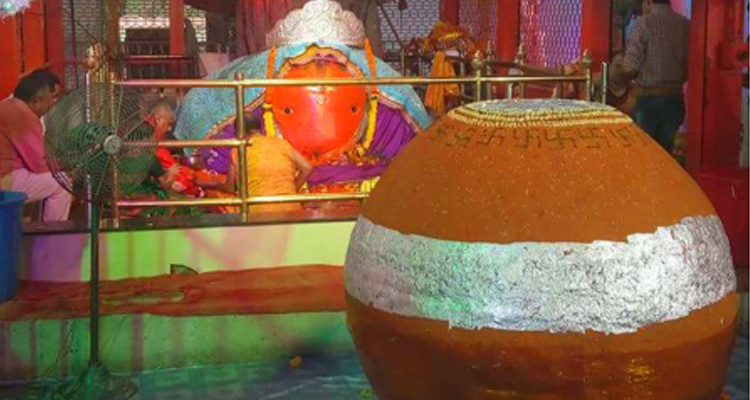
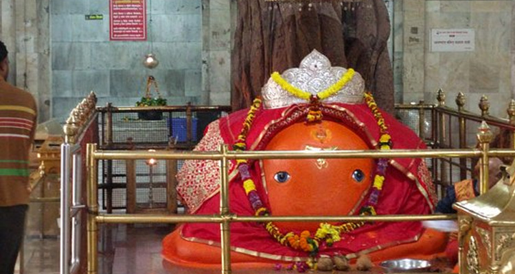
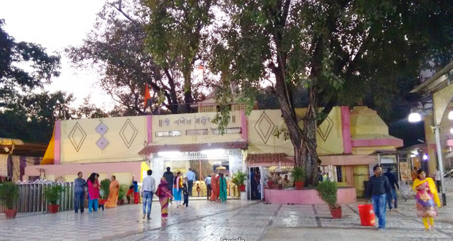

An ancient and famous temple of Tekdi Ganesh. The temple carries huge importance among
Nagpurians who daily visit the temple. The name Tekdi Ganpati is attributed to its location as the
temple stands on a hill which is called Tekdi in the Marathi language. Tekdi Ganesh Temple is said
to be 250 years old. On the day of Chaturthi of every month, a big congregation of pilgrims
assembled in this temple. Every year in the Paush month on the Sankashti Chaturthi day, a grand
yatra called Tekdi Ganapati Yatra is held. Apart from this Ganesh Chaturthi and Ganesh Jayanti are also celebrated with great joy.
|  |  |  | ||
|
|
Rating: | 4/5 stars
total 68 reviews |
Shree Ganesh Mandir Tekdi Nagpur Address: Station Road, Sitabuldi, Nagpur, Maharashtra, 440012, India |
Shree Ganesh Mandir Tekdi Nagpur Phone
07122 020353 |